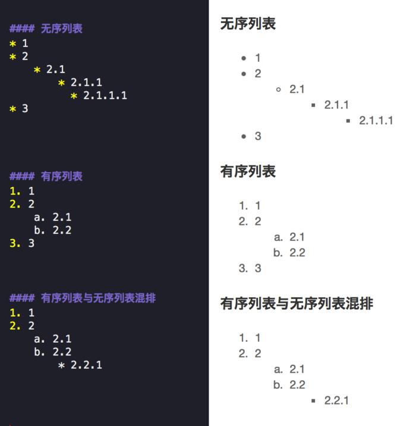
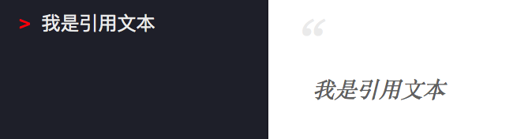
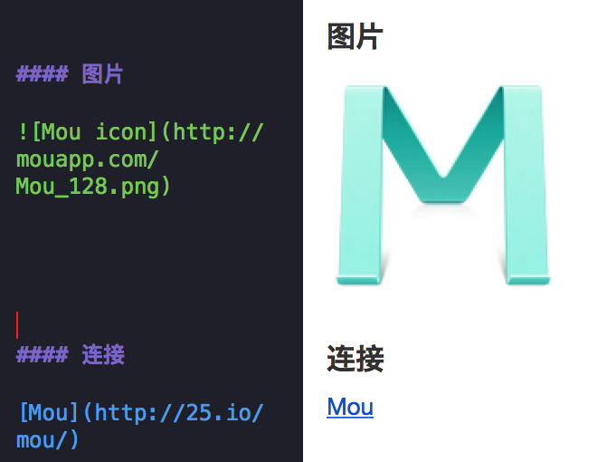
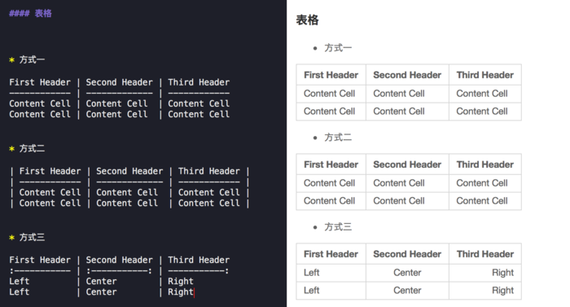

标题
总共六级标题，建议在井号后加一个空格，这是最标准的 Markdown 语法。
一级标题
二级标题
三级标题
四级标题
五级标题
六级标题
和h1到h6一样，字体由大到小
文本样式
-
加粗 字体两边各加两个星号 ** 快捷键ctrl+b
-
斜体 字体两边各加 __ 快捷键 ctrl+i
-
删除线 各加两个波浪线。 快捷键：ctrl+u ,和uc浏览器有热键冲突

-
换行 换行：只需在行末加两个空格键和一个回车键即可换行
-
分段 分段：段落之间空一行即可。
列表
-
无序列表 使用星号(*)、加号(+)或是减号(-)作为列表标记，注意符号后边一定要跟一个空格。 在星号前加两个空格键或者一个tab键就可以产生一个子列表。
-
有序列表 在文本前加字母或数字即可生成一个有序列表。 注意，当你第一个序号使用什么作为标记的，那么同级别的列表就会自动使用其作为标记。 
引用
文本前加大于号 > 即可 
图片和连接
-
图片
：感叹号+中括号[图片描述]+小括号(连接地址) -
连接
[文本内容](连接地址)：中括号+小括号图片比连接多一个感叹号 
水平线
三个减号---或者三个星号***都可以画出一条水平分割线，需要和上边的内容空出一行
代码段
点：指的是键盘tab上边那个小点
这是一行代码，用两点包裹
|
|
注意：如果三个点后边有空格，会导致解析错误。样式直接飞了，还很不容易发现。所以如果样式飞了，就从样式错乱的位置找代码段。
在围栏式代码块中，你可以指定一个可选的语言标识符，然后我们就可以为它启用语法着色了。方法是在第一排的三个点右边加上想要的语言标识符。 目前已知可用： java js javascript sql xml
表格
在 Markdown下制作表格，是非常非常麻烦的一件事，必须画出来才行。 
注释
<!-- 一段注释 -->
和html里的注释是一样，注释是给自己看的，预览时也不会出现，当然发布出去别人也不会看见。
制表
记录一种最简单的制表方法
| title1 | title1 |
|---|---|
| content1 | content2 |
| content3 | content4 |
| content5 | content6 |
|
|
| 表头必须和内容间隔一行，表头和内容之间由 | |
|---|---|
| 分隔，一个 – 表示一个表头，中间由竖线分隔，不需要加空格。如果表头有四个， | |
| – | – |
| 这样就可以了。 | |
| 内容由竖线分隔。 |
锚点
在需要跳转的位置添加锚点，语法如下：
<span id="jump">跳转到的地方</span>
在需要点击跳转的位置，使用上面的id，格式类似超链接的形式：
[点击跳转](#jump)
公式
参考地址：https://www.cnblogs.com/linxd/p/4955530.html
本文从math.stackexchange.com上名为MathJax basic tutorial and quick reference的问题翻译而来，并有所改动。主要讲述了如何使用MathJax和相关的Latex语法。
MathJax是一款运行在浏览器中的开源数学符号渲染引擎，使用MathJax可以方便的在浏览器中显示数学公式，不需要使用图片。目前，MathJax可以解析Latex、MathML和ASCIIMathML的标记语言。MathJax项目于2009年开始，发起人有American Mathematical Society, Design Science等，还有众多的支持者，个人感觉MathJax会成为今后数学符号渲染引擎中的主流，也许现在已经是了。本文接下来会讲述MathJax的基础用法，但不涉及MathJax的安装及配置。此外，推荐使用StackEdit学习MathJax的语法，它支持Markdown和MathJax，本文使用此编辑器撰写。
基础
使用MathJax时，需要用一些适当的标记告诉MathJax某段文本是公式代码。此外，MathJax中的公式排版有两种方式，inline和displayed。inline表示公式嵌入到文本段中，displayed表示公式独自成为一个段落。例如：$f(x) = 3 \times x$，这是一个inline公式，而下面则是一个displayed公式。 $$ f(x) = 3 \times x $$
分隔符
在MathJax中，默认的displayed公式分隔符有 $$...$$ 和\[...\]，而默认的inline公式分隔符为(...)，当然这些都是可以自定义的，具体配置请参考文档。下文中，使用$$...$$作为displayed分隔符，$...$作为inline分隔符。
希腊字母
| 名称 | 大写 | Tex | 小写 | Tex |
|---|---|---|---|---|
| alpha | Α | A | α | \alpha |
| beta | Β | B | β | \beta |
| gamma | Γ | \Gamma | γ | \gamma |
| delta | Δ | \Delta | δ | \delta |
| epsilon | Ε | E | ε | \epsilon |
| zeta | Ζ | Z | ζ | \zeta |
| eta | Η | H | η | \eta |
| theta | Θ | \Theta | θ | \theta |
| iota | Ι | I | ι | \iota |
| kappa | Κ | K | κ | \kappa |
| lambda | Λ | \Lambda | λ | \lambda |
| mu | Μ | M | μ | \mu |
| nu | Ν | N | ν | \nu |
| xi | Ξ | \Xi | ξ | \xi |
| omicron | Ο | O | ο | \omicron |
| pi | Π | \Pi | π | \pi |
| rho | Ρ | P | ρ | \rho |
| sigma | Σ | \Sigma | σ | \sigma |
| tau | Τ | T | τ | \tau |
| upsilon | Υ | \Upsilon | υ | \upsilon |
| phi | Φ | \Phi | φ | \phi |
| chi | Χ | X | χ | \chi |
| psi | Ψ | \Psi | ψ | \psi |
| omega | Ω | \Omega | ω | \omega |
上标与下标
上标：^，下标：_，例如x_i^2： $x_i^2$
默认情况下，上下标符号仅对下一个组起作用。一个组即单个字符或者使用{…}包裹起来的内容。也就是说，如果使用10^10，会得到$10^10$，而10^{10}才是$10^{10}$。
同时，大括号还能消除二义性，如x^5^6将得到一个错误，必须使用大括号来界定^的结合性，如{x^5}^6：${x^5}^6$或者x^{5^6}：$x^{5^6}$
括号
-
小括号与方括号：使用原始的()，[]即可，如
(2+3)[4+4]：(2+3)[4+4] -
大括号：由于大括号{}被用来分组，因此需要使用
\{和\}表示大括号，也可以使用\lbrace和\rbrace来表示。如\{a*b\}：${ab}$，或者\lbrace a*b \rbrace：$\lbrace ab \rbrace$ -
尖括号：使用
\langle和\rangle表示左尖括号和右尖括号。如\langle x \rangle：$\langle x \rangle$ -
上取整：使用
\lceil和\rceil表示。如\lceil x \rceil：$\lceil x \rceil$ -
下取整：使用
\lfloor和\rfloor表示。如\lfloor x \rfloor：$\lfloor x \rfloor$ -
不可见括号：使用.表示
需要注意的是，原始符号并不会随着公式大小缩放，可以使用\left(...\right)来自适应地调整括号大小。如下，
$$
\lbrace\sum_{i=0}^0 i^2 = \frac{(n^2+n)(2n+2)}{6}\rbrace
$$
$$ \left\lbrace\sum_{i=0}^0 i^2 = \frac{(n^2+n)(2n+2)}{6}\right\rbrace $$
可以看到，下边公式中的大括号是经过缩放的。
求和与积分
\sum用来表示求和符号，其下标表示求和下限，上标表示上限。如\sum_1^n：$\sum_1^n$
\int用来表示积分符号，同样地，其上下标表示积分的上下限。如\int_1^\infty：$\int_1^\infty$
与此类似的符号还有：
\prod：$\prod$
\bigcup：$\bigcup$
\bigcap：$\bigcap$
\iint:$\iint$
分式和根式
分式的表示：
- 第一种，使用
\frac ab，\frac作用于其后的两个组a和b ，结果为$\frac ab$。如果你的分子或分母不是单个字符，请使用{…}来分组。 - 第二种，使用
\over来分隔一个组的前后两部分，如{a+1 \over b+1}：${a+1 \over b+1}$
根式使用\sqrt表示，如：\sqrt[4]{\frac xy}：$\sqrt[4]{\frac xy}$
字体
- 使用
\mathbb或\Bbb显示黑板粗体字，此字体经常用来表示实数、整数、有理数、复数。如$\Bbb {CHNQRZ}$ - 使用
\mathbf显示黑体字，如：$\mathbf {ABCDEFGHIJKLMNOPQRSTUVWXYZ}$ - 使用
\mathtt显示打印机字体，如：$\mathtt {ABCDEFGHIJKLMNOPQRSTUVWXYZ}$ - 使用
\mathrm显示罗马字体，如：$\mathrm {ABCDEFGHIJKLMNOPQRSTUVWXYZ}$ - 使用
\mathscr显示手写体，如，$\mathscr {ABCDEFGHIJKLMNOPQRSTUVWXYZ}$ - 使用
\mathfrak显示 Fraktur 字母（一种德国字体），如：$\mathfrak {ABCDEFGHIJKLMNOPQRSTUVWXYZ}$
特殊函数和符号
- 常见的三角函数，如 $sin x$，$tanx$，$ lim1→∞$
- 比较运算符：
\lt \gt \le \ge \neq：$\lt \gt \le \ge \neq$。可以在这些运算符前面加上\not，如\not\lt：$\not\lt$ \times \div \pm \mp表示：$\times \div \pm \mp$，\cdot表示居中的点，x \cdot y：$x \cdot y$- 集合关系与运算：
\cup \cap \setminus \subset \subseteq \subsetneq \supset \in \notin \emptyset \varnothing：$\cup \cap \setminus \subset \subseteq \subsetneq \supset \in \notin \emptyset \varnothing$ - 表示排列使用
\binom{n+1}{2k}或{n+1 \choose 2k}：${n+1 \choose 2k}$ - 箭头：
\to \rightarrow \leftarrow \Rightarrow \Leftarrow \mapsto：$\to \rightarrow \leftarrow \Rightarrow \Leftarrow \mapsto$ - 逻辑运算符：
\land \lor \lnot \forall \exists \top \bot \vdash \vDash：$\land \lor \lnot \forall \exists \top \bot \vdash \vDash$ \star \ast \oplus \circ \bullet：$\star \ast \oplus \circ \bullet$\approx \sim \cong \equiv \prec：$\approx \sim \cong \equiv \prec$\infty \aleph_o \nabla \partial \Im \Re：$\infty \aleph_o \nabla \partial \Im \Re$- 模运算
\pmode，如a \equiv b \pmod n：$a \equiv b \pmod n$ \ldots与\cdots，其区别是dots的位置不同，ldots位置稍低，cdots位置居中。- 一些希腊字母具有变体形式，如
\epsilon \varepsilon：$\epsilon \varepsilon$。\phi \varphi：$\phi \varphi$
使用Detexify，你可以在网页上画出符号，Detexify会给出相似的符号及其代码。这是一个方便的功能，但是不能保证它给出的符号可以在MathJax中使用，你可以参考supported-latex-commands确定MathJax是否支持此符号。
符号之间的间隙
通常 MathJax 通过内部策略自己管理公式内部的空间，因此a…b与a……b( . 表示空格)都会显示为$a b$。可以通过在ab间加入\，增加些许间隙，\;增加较宽间隙，\quad与\qquad会增加更大的间隙，如$a \qquad b$
顶部符号
对于单字符，\hat：$\hat x$
对于多字符，\widehat：$\widehat {xy}$
类似的还有\overline：$\overline {xyz}$
\vec：$\vec a$
\overrightarrow：$\overrightarrow x$
\dot：$\dot x$
\ddot：$\ddot x$
注意
基础部分就是这些。需要注意的是一些MathJax使用的特殊字符，可以使用\转义为原来的含义。例如：\$：$$$，\_：$_$
表格
使用$$\begin{array}{列样式}...\end{array}$$这样的形式来创建表格，列样式可以是clr表示居中，左，右对齐，还可以使用|表示一条竖线。表格中各行使用\分隔，各列使用&分隔，使用\hline在本行前加入一条直线。例如 $$\begin{array}{c|lcr} n & \text{Left} & \text{Center} & \text{Right} \\ \hline 1 & 0.24 & 1 & 125 \\ 2 & -1 & 189 & -8 \\ 3 & -20 & 2000 & 1+10i \\ \end{array}$$ 结果：
$$
\begin{array}{c|lcr} n & \text{Left} & \text{Center} & \text{Right} \ \hline 1 & 0.24 & 1 & 125 \ 2 & -1 & 189 & -8 \ 3 & -20 & 2000 & 1+10i \ \end{array}
$$
一个复杂的例子如下：
$$
\begin{array}{c}\begin{array}{cc}\begin{array}{c|cccc} \text{min} & 0 & 1 & 2 &3 \ \hline 0 & 0 & 0 & 0 & 0 \ 1 & 0 & 1 & 1 & 1 \ 2 & 0 & 1 & 2 & 2 \ 3 & 0 & 1 & 2 & 3 \end{array} & \begin{array}{c|cccc} \text{max} & 0 & 1 & 2 & 3 \ \hline 0 & 0 & 1 & 2 & 3 \ 1 & 1 & 1 & 2 & 3 \ 2 & 2 & 2 & 2 & 3 \ 3 & 3 & 3 & 3 & 3 \end{array} \end{array} \ \begin{array}{c|cccc} \Delta & 0 & 1 & 2 & 3 \ \hline 0 & 0 & 1 & 2 & 3 \ 1 & 1 & 0 & 1 & 2 \ 2 & 2 & 1 & 0 & 1 \ 3 & 3 & 2 & 1 & 0 \end{array}\end{array}
$$
矩阵
基本用法
使用$$\begin{matrix}...\end{matrix}$$来表示矩阵，在\begin与\end之间加入矩阵的元素即可。矩阵的行之间用\分隔，列之间用&分隔。例如 $$\begin{matrix} 1 & x & x^2 \\ 1 & y & y^2 \\ 1 & z & z^2 \end{matrix}$$ 结果：
$$
\begin{matrix} 1 & x & x^2 \ 1 & y & y^2 \ 1 & z & z^2 \end{matrix}
$$
加括号
如果要对矩阵加括号，可以像上文中提到的那样，使用\left与\right配合表示括号符号。也可以使用特殊的matrix，即替换\begin{matrix}...\end{matrix}中的matrix为pmatrix , bmatrix , Bmatrix , vmatrix , Vmatrix
如 pmatrix：$\begin{pmatrix} 1 & 2 \ 3 & 4 \ \end{pmatrix}$
bmatrix：$\begin{bmatrix} 1 & 2 \ 3 & 4 \ \end{bmatrix}$
Bmatrix：$\begin{Bmatrix} 1 & 2 \ 3 & 4 \ \end{Bmatrix}$
vmatrix：$\begin{vmatrix} 1 & 2 \ 3 & 4 \ \end{vmatrix}$
Vmatrix：$\begin{Vmatrix} 1 & 2 \ 3 & 4 \ \end{Vmatrix}$
省略元素
可以使用 \cdots：$\cdots$ 、\ddots：$\ddots$、\vdots：$\vdots$来省略矩阵中的元素，如：
$$
\begin{pmatrix} 1 & a_1 & a_1^2 & \cdots & a_1^n \ 1 & a_2 & a_2^2 & \cdots & a_2^n \ \vdots & \vdots & \vdots & \ddots & \vdots \ 1 & a_m & a_m^2 & \cdots & a_m^n \end{pmatrix}
$$
增广矩阵
增广矩阵需要使用前面的array来实现，如 $$ \left[ \begin{array}{cc|c} 1 & 2 & 3 \\ 4 & 5 & 6 \end{array} \right] $$ 结果：
$$
\left[ \begin{array}{cc|c} 1 & 2 & 3 \ 4 & 5 & 6 \end{array} \right]
$$
对齐的公式
有时候可能需要一系列的公式中等号对齐，如：
$$
\begin{align} \sqrt{37} & = \sqrt{\frac{73^2-1}{12^2}} \ & = \sqrt{\frac{73^2}{12^2} \cdot \frac{73^2-1}{73^2}} \ & = \frac{73}{12} \sqrt{1 - \frac{1}{73^2}} \ & \approx \frac{73}{12} \left( 1 - \frac{1}{2 \cdot 73^2} \right) \end{align}
$$
这时候需要使用形如\begin{align}...\end{align}的格式，其中需要使用&来指示需要对齐的位置。
分类表达式
定义函数的时候经常需要分情况给出表达式，可使用\begin{cases}...\end{cases}。其中，使用\来分类，使用&指示需要对齐的位置。如：
$$
f(n) = \begin{cases} n/2, & \text{if $n$ is even} \ 3n+1, & \text{if $n$ is odd} \end{cases}
$$
上述公式也可以移动到右侧，不过需要使用array来实现，如下：
$$
\left. \begin{array}{l} \text{if $n$ is even:} & n/2 \ \text{if $n$ is odd:} & 3n+1 \end{array} \right} = f(n)
$$
最后，如果需要让分类之间的垂直间隔变大，可以使用\[2ex]代替\来分隔不同情况。（3ex, 4ex也可以使用，1ex相当于原始距离）。
空间问题
在使用LaTex公式时，有一些不会影响公式正确性，但会使其看上去很糟糕的问题。
不要在指数或者积分中使用\frac
在指数或者基本表达式中使用\frac会使表达式看起来不清晰，因此在专业的数学排版中很少被使用。应该使用一个水平的/来代替，效果如下： $$ \begin{array}{cc} \mathrm{Bad} & \mathrm{Better} \ \hline \ e^{i\frac{\pi}{2}} \quad e^{\frac{i\pi}{2}} & e^{i\pi/2} \ \int_{-\frac{\pi}{2}}^{\frac{\pi}{2}} \sin x , dx & \int_{-\pi/2}^{\pi/2} \sin x , dx \ \end{array} $$
使用\mid代替|作为分隔符
符号|作为分隔符时有排版空间大小的问题，应该使用\mid代替，效果如下： $$ \begin{array}{cc} \mathrm{Bad} & \mathrm{Better} \ \hline \ {x | x^2 \in \Bbb Z} & {x \mid x^2 \in \Bbb Z } \end{array} $$
多重积分
对于多重积分，不要使用\int\int此类的表达，应该使用\iint \iiint等特殊形式，效果如下： $$ \begin{array}{cc} \mathrm{Bad} \mathrm{Better} \ \hline \ \int\int_S f(x) , dy , dx & \iint_S f(x) , dy , dx \ \int\int\int_V f(x) , dz , dy , dx & \iiint_V f(x) , dz , dy , dx \end{array} $$ 此外，在微分前应该使用,来增加些许空间，否则TEX𝑇𝐸𝑋会将微分紧凑地排列在一起，如下： $$ \begin{array}{cc} \mathrm{Bad} & \mathrm{Better} \ \hline \ \iiint_V f(x) dz dy dx & \iiint_V f(x) , dz , dy , dx \end{array} $$
连分数
书写连分数表达式时，请使用\cfrac代替\frac或者\over，两者效果对比如下：
(\cfrac) $$ x = a_0+\cfrac{1^2}{a_1+\cfrac{2^2}{a_2+\cfrac{3^2}{a_3+\cfrac{4^2}{a_4+\cdots}}}} $$ (\frac) $$ x = a_0+\frac{1^2}{a_1+\frac{2^2}{a_2+\frac{3^2}{a_3+\frac{4^2}{a_4+\cdots}}}} $$
方程组
使用\begin{array}...\end{array}与\left{…与\right.配合表示方程组，如：
$$
\left{ \begin{array}{c} a_1x+b_1y+c_1z=d_1 \ a_2x+b_2y+c_2z=d_2 \ a_3x+b_3y+c_3z=d3 \end{array} \right.
$$
同时，还可以使用\begin{cases}...\end{cases}表达同样的方程组，如：
$$
\begin{cases} a_1x+b_1y+c_1z=d_1 \ a_2x+b_2y+c_2z=d_2 \ a_3x+b_3y+c_3z=d_3 \end{cases}
$$
对齐方程组中的＝号，可以使用\begin{aligned}...\end{aligned}，如：
$$
\left{ \begin{aligned} a_1x+b_1y+c_1z & = d_1+e_1 \ a_2x+b_2y & = d_2 \ a_3x+b_3y+c_3z & = d_3 \end{aligned} \right.
$$
颜色
命名颜色是浏览器相关的，如果浏览器没有定义相关的颜色名称，则相关文本将被渲染为黑色。以下颜色是HTML4和CSS2标准中定义的一些颜色，其应该被大多数浏览器定义了。 $$ \begin{array}{|rc|} \hline \ \verb+\color{black}{text}+ & \color{black}{text} \ \verb+\color{gray}{text}+ & \color{gray}{text} \ \verb+\color{silver}{text}+ & \color{silver}{text} \ \verb+\color{white}{text}+ & \color{white}{text} \ \hline \ \verb+\color{maroon}{text}+ & \color{maroon}{text} \ \verb+\color{red}{text}+ & \color{red}{text} \ \verb+\color{yellow}{text}+ & \color{yellow}{text} \ \verb+\color{lime}{text}+ & \color{lime}{text} \ \verb+\color{olive}{text}+ & \color{olive}{text} \ \verb+\color{green}{text}+ & \color{green}{text} \ \verb+\color{teal}{text}+ & \color{teal}{text} \ \verb+\color{aqua}{text}+ & \color{aqua}{text} \ \verb+\color{blue}{text}+ & \color{blue}{text} \ \verb+\color{navy}{text}+ & \color{navy}{text} \ \verb+\color{purple}{text}+ & \color{purple}{text} \ \verb+\color{fuchsia}{text}+ & \color{fuchsia}{text} \ \verb+\color{magenta}{text}+ & \color{magenta}{text} \ \hline \end{array} $$ 此外，HTML5和CSS3也定义了一些颜色名称，参见 。同时，颜色也可以使用#rgb的形式来表示，如下： $$ \begin{array}{|rrrrrrrr|} \hline \verb+#000+ & \color{#000}{text} & & & \verb+#00F+ & \color{#00F}{text} & & \ & & \verb+#0F0+ & \color{#0F0}{text} & & & \verb+#0FF+ & \color{#0FF}{text} \ \verb+#F00+ & \color{#F00}{text} & & & \verb+#F0F+ & \color{#F0F}{text} & & \ & & \verb+#FF0+ & \color{#FF0}{text} & & & \verb+#FFF+ & \color{#FFF}{text} & & \ \hline \end{array} $$ HTML色彩快速参考手册
公式标记与引用
使用\tag{yourtat}来标记公式，如果想在之后引用该公式，则还需要加上\label{yourlabel}在\tag之后，如：
$$
a:= x^2-y^3 \tag{}\label{}
$$
为了引用公式，可以使用\eqref{rlabel}，如：
$$
a+y^3 \stackrel{\eqref{*}}=x^2
$$
可以看到，通过超链接可以跳转到被引用公式的位置。
补充
indicator function：\mathbb{I}：$\mathbb{I}$
空心的符号：\mathbb{KL}：$\mathbb{KL}$
向量、矩阵：\mathrm{x, y}：$\mathrm{x, y}$
实值：x：$x$
使用 \begin{align} 时，在每个式子末尾加上 \nonumber 可以去掉显示式子的标号，具体内容参见【链接】